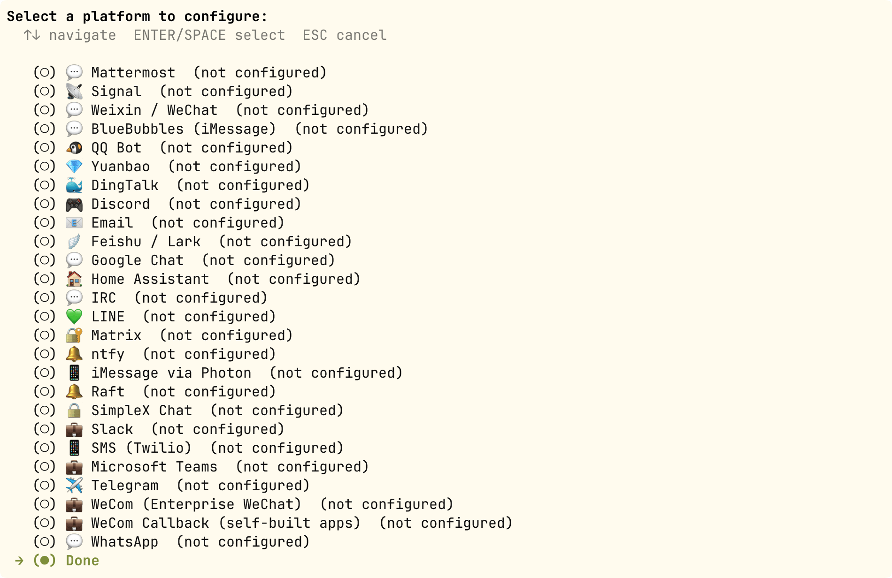

Hermes Agent 平台消息接入
消息网关（Messaging Gateway）让同一个 Agent——同样的记忆、技能和工具——在 20+ 平台上无缝运行。
本章将介绍 Gateway 的配置与部署、会话生命周期、多用户隔离策略以及安全访问控制。
消息网关概览
消息网关是一个常驻后台进程，统一管理所有消息平台的连接、会话、定时任务和媒体投递。
你在 CLI 中教给 Agent 的一切——记忆、技能、偏好——在所有平台上完全一致。
支持的平台
Hermes 支持 20+ 消息平台：CLI、Telegram、Discord、Slack、WhatsApp、Signal、Matrix、Mattermost、Email、SMS、钉钉、飞书/Lark、企业微信、微信、QQ、元宝、BlueBubbles（iMessage）、Home Assistant、Microsoft Teams、Google Chat 等。
平台能力对比
| 平台 | 语音 | 图片 | 文件 | 消息串 | 表情反应 | 打字指示 | 流式输出 |
|---|---|---|---|---|---|---|---|
| Telegram | 支持 | 支持 | 支持 | 支持 | — | 支持 | 支持 |
| Discord | 支持 | 支持 | 支持 | 支持 | 支持 | 支持 | 支持 |
| Slack | 支持 | 支持 | 支持 | 支持 | 支持 | 支持 | 支持 |
| — | 支持 | 支持 | — | — | 支持 | 支持 | |
| Signal | — | 支持 | 支持 | — | — | 支持 | 支持 |
| 飞书/Lark | 支持 | 支持 | 支持 | 支持 | 支持 | 支持 | 支持 |
| 企业微信 | 支持 | 支持 | 支持 | — | — | — | — |
| 钉钉 | — | 支持 | 支持 | — | 支持 | — | 支持 |
| Microsoft Teams | — | 支持 | — | 支持 | — | 支持 | — |
| — | 支持 | 支持 | 支持 | — | — | — | |
| SMS | — | — | — | — | — | — | — |
| Matrix | 支持 | 支持 | 支持 | 支持 | 支持 | 支持 | 支持 |
跨平台会话连续性：同一个 Agent 可以在不同平台之间保持上下文。比如你在 Telegram 上跟 Agent 聊了一半，切换到 Discord 后 Agent 仍然记得之前的对话。
Gateway 启动与配置
桌面版配置
打开左侧菜单的消息平台，可以看到支持的平台，点击对应平台即可对应配置：

交互模式下配置
使用交互式向导完成所有平台的初始配置：
hermes gateway setup

向导会引导你完成每个平台的配置：选择平台、填写 Bot Token、设置允许用户列表等。
比如选择飞书，进入后，可以选择扫描二维码创建机器人或通过 APP ID 创建：

网关管理命令
实例
hermes gateway
# 安装为用户级系统服务（Linux systemd / macOS launchd）
hermes gateway install
# Linux：安装为开机自启的系统服务
sudo hermes gateway install --system
# 服务控制
hermes gateway start # 启动服务
hermes gateway stop # 停止服务
hermes gateway restart # 重启服务
hermes gateway status # 查看服务状态
Telegram Bot 接入实战
以 Telegram 为例，完成一个完整的 Bot 接入流程。
步骤一：创建 Telegram Bot。
在 Telegram 中搜索 @BotFather，发送 /newbot 命令，按提示设置 Bot 名称和用户名。
BotFather 会返回一个 Bot API Token，格式类似：1234567890:ABCdefGHIjklMNOpqrsTUVwxyz。
步骤二：配置 Hermes Gateway。
实例
# Telegram 平台配置
platforms:
telegram:
enabled: true
bot_token: "1234567890:ABCdefGHIjklMNOpqrsTUVwxyz"
# 可选：允许的用户 ID 列表（白名单模式）
allowed_users:
- "123456789"
# 可选：是否需要在群组中被 @提及 才响应
require_mention: true
# 可选：免 @提及 的频道列表
free_response_channels:
- "-1001234567890"
步骤三：启动并测试。
实例
hermes gateway start
# 在 Telegram 中向你的 Bot 发送消息测试
首次接入建议使用白名单模式（allowed_users），只允许你自己的账号与 Agent 交互，待验证一切正常后再开放给其他人。
平台内可用的斜杠命令
在任何消息平台内，都可以使用以下命令：
| 命令 | 功能 |
|---|---|
| /new 或 /reset | 开启新会话 |
| /model [名称] | 查看或切换模型 |
| /retry | 重试上一条消息 |
| /undo | 撤销上一轮对话 |
| /stop | 中断当前任务 |
| /approve / /deny | 审批/拒绝危险命令 |
| /background <任务> | 在后台会话中运行任务 |
| /status | 显示当前会话信息 |
| /usage | 显示本次会话 Token 用量 |
| /voice [on/off/tts] | 控制语音回复 |
| /compress | 手动压缩对话上下文 |
| /resume [标题] | 恢复之前命名的会话 |
| /<skill-name> | 调用任意已安装技能 |
| /reload-mcp | 重新加载 MCP 服务器 |
| /update | 更新 Hermes 到最新版本 |
| /help | 显示所有可用命令 |
会话生命周期
Session 是 Hermes Gateway 中管理对话的核心概念。
理解 Session 的工作原理，有助于你配置合适的会话隔离策略和重置规则。
SessionSource：消息来源描述符
每条进入 Gateway 的消息都附带一个 SessionSource，它记录了这条消息「从哪里来」。
| 字段 | 类型 | 说明 |
|---|---|---|
| platform | string | 平台名称（telegram、discord、slack 等） |
| chat_id | string | 会话标识（私聊 ID、群组 ID、频道 ID） |
| chat_type | string | 会话类型：dm（私聊）、group（群组）、channel（频道）、thread（线程） |
| user_id | string | 消息发送者的平台 ID |
| user_name | string | 消息发送者的显示名称 |
| thread_id | string | 论坛话题 ID（Telegram 论坛）/ Discord 线程 ID |
| guild_id | string | Discord 服务器 ID（用于服务器隔离） |
Session Key 生成规则
Session Key 是由 SessionSource 中的字段组合而成的确定性字符串。
它决定了哪些消息属于同一个会话，格式如下：
agent:main:{platform}:{chat_type}:{chat_id}:{thread_id}:{user_id}
不同场景下的 Session Key 示例：
| 场景 | Session Key |
|---|---|
| Telegram 私聊 | agent:main:telegram:dm:12345 |
| Telegram 群组 | agent:main:telegram:group:-10012345:user_abc |
| Telegram 论坛话题 | agent:main:telegram:group:-10012345:thread_678:user_abc |
| Discord 私聊 | agent:main:discord:dm:12345 |
| Discord 服务器频道 | agent:main:discord:channel:12345:user_abc |
| Discord 线程 | agent:main:discord:thread:12345:thread_678 |
Session Key 的生成规则是网关最重要的配置之一。如果配置不当，可能导致不同用户的会话「串线」——两个不同的人看到对方的对话内容。
SessionEntry：活跃会话记录
每个 Session Key 对应一个 SessionEntry，它记录了会话的元数据和状态。
| 字段 | 说明 |
|---|---|
| session_id | 会话唯一标识，格式：YYYYMMDD_HHMMSS_8位随机hex |
| created_at | 会话创建时间 |
| updated_at | 最后活动时间（用于闲置超时判断） |
| total_tokens | 累计 token 消耗 |
| estimated_cost_usd | 累计费用估算（美元） |
| suspended | 是否被强制挂起（/stop 命令或异常循环） |
| resume_pending | 是否在等待恢复（崩溃后重启恢复标记） |
多用户隔离策略
多用户隔离决定了多个用户在同一个群组或频道中，是共享一个会话还是各自独立。
这个配置直接影响用户体验——共享会话意味着用户 A 可以看到用户 B 的对话上下文。
隔离策略配置
| 配置项 | 默认值 | 含义 |
|---|---|---|
| group_sessions_per_user | true | 群组/频道中每个用户拥有独立的会话 |
| thread_sessions_per_user | false | 线程中所有用户共享同一个会话 |
不同场景的行为
| 场景 | 默认行为 | 说明 |
|---|---|---|
| 私聊（DM） | 始终独立 | 私聊永远是私有的，不可配置 |
| 群组/频道 | 每个用户独立会话 | 用户 A 和用户 B 在同一个群组中各自拥有独立的会话上下文 |
| 线程（论坛话题） | 所有用户共享会话 | Telegram 论坛话题和 Discord 线程中，所有参与者共享同一个上下文 |
共享会话的系统提示词变化
当会话是共享模式（shared_multi_user_session = true）时，系统提示词会发生变化：
- 不再固定一个用户名，而是提示「多用户会话——消息前缀有发送者名称」
- 每条用户消息前会加上发送者的显示名称，让 Agent 知道是谁在说话
- 这种设计保持了提示词缓存的有效性（系统提示词不随发送者变化而变化）
默认的隔离策略（群组 per-user，线程 shared）是经过大量实践验证的最佳实践。除非有特殊需求，否则不建议修改。
网关安全配置
用户访问控制
默认情况下，网关拒绝所有未在白名单中的用户——这是拥有终端访问权限的 Bot 的安全默认设置。
配置允许访问的用户（在 .env 文件中）：
实例
# 针对特定平台的用户白名单
TELEGRAM_ALLOWED_USERS=123456789,987654321
DISCORD_ALLOWED_USERS=123456789012345678
SLACK_ALLOWED_USERS=U012AB3CD,U012EF4GH
FEISHU_ALLOWED_USERS=ou_xxxxxxxx,ou_yyyyyyyy
WECOM_ALLOWED_USERS=user-id-1,user-id-2
TEAMS_ALLOWED_USERS=aad-object-id-1
# 跨所有平台生效的白名单
GATEWAY_ALLOWED_USERS=123456789,987654321
# 允许所有用户（不推荐用于有终端权限的 Bot）
GATEWAY_ALLOW_ALL_USERS=true
DM 配对（替代白名单）
无需手动配置用户 ID，新用户私信 Bot 时会收到一次性配对码：
实例
# 你来批准该用户的访问权限
hermes pairing approve telegram XKGH5N7P
# 查看待处理 + 已批准的用户列表
hermes pairing list
# 撤销某个用户的访问权限
hermes pairing revoke telegram 123456789
配对码 1 小时后过期，有频率限制，使用密码学随机数生成。
沉默令牌
用于群聊、Hook 和自动化流程中，让 Agent 在特定条件下不发送任何消息：
# Agent 回复中仅包含以下内容之一时，网关不会向平台发送任何消息： [SILENT] SILENT NO_REPLY NO REPLY
沉默是投递决策，不影响会话记录——该回复仍存储在会话历史中，保证对话交替逻辑正常。
会话重置策略
配置会话何时自动重置，防止上下文无限增长：
实例
"reset_by_platform": {
"telegram": { "mode": "idle", "idle_minutes": 240 },
"discord": { "mode": "idle", "idle_minutes": 60 },
"slack": { "mode": "daily", "reset_hour": 4 }
}
}
| 策略 | 默认值 | 说明 |
|---|---|---|
| daily | 凌晨 4 点 | 每天特定时刻重置会话 |
| idle | 1440 分钟 | 空闲超时后重置会话 |
| both | 组合 | 哪个先触发就重置 |
常用命令速查
实例
hermes gateway setup # 交互式平台配置
hermes gateway # 前台运行（调试）
hermes gateway install # 安装为用户服务
hermes gateway start / stop / restart # 服务控制
hermes gateway status # 查看服务状态
# ─── 用户配对 ────────────────────────────────────────────────
hermes pairing list # 查看配对列表
hermes pairing approve <platform> <code> # 批准配对
hermes pairing revoke <platform> <user_id> # 撤销访问
# ─── 会话内斜杠命令 ──────────────────────────────────────────
/new # 开启新会话
/model [名称] # 查看或切换模型
/retry # 重试上一条消息
/undo # 撤销上一轮对话
/stop # 中断当前任务
/approve / /deny # 审批/拒绝危险命令
/background <任务> # 后台运行任务
/status # 当前会话信息
/usage # Token 用量
/voice [on/off/tts] # 控制语音
/compress # 压缩上下文
/resume [标题] # 恢复会话
/<skill-name> # 调用技能
/reload-mcp # 重新加载 MCP
/update # 更新 Hermes
/help # 所有命令

点我分享笔记